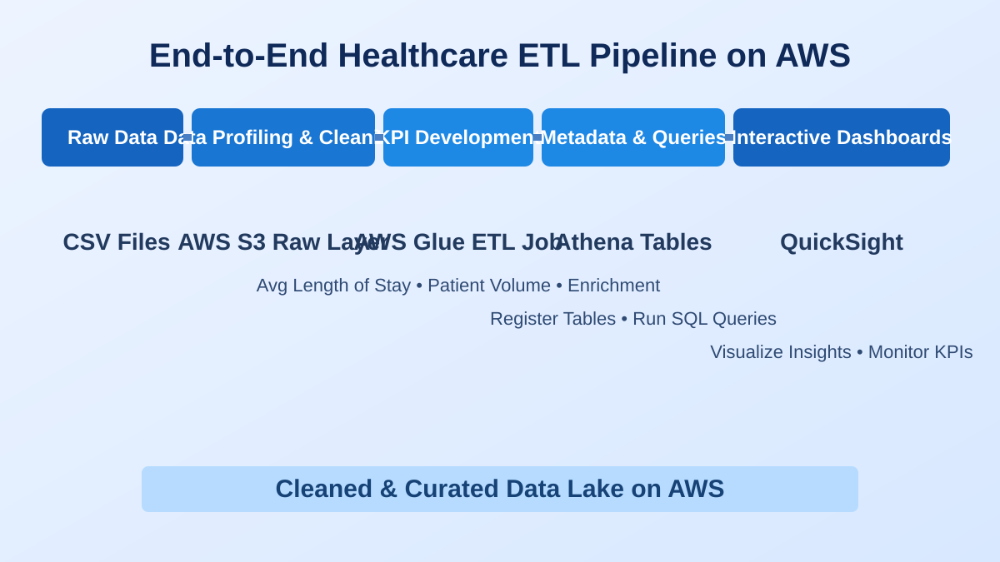
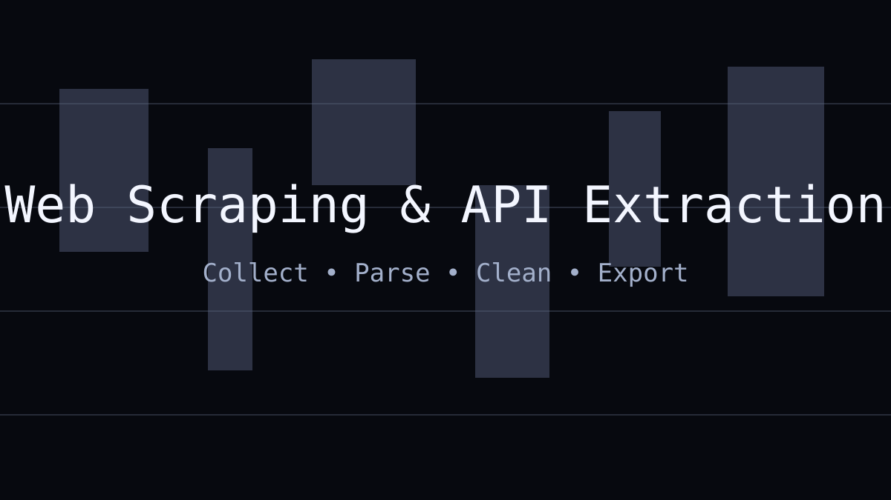

SQLPythonPower BIOLIST Marketplace AnalysisBuilt a MySQL medallion warehouse and RFM segments for 99K marketplace orders, then validated a coupon intervention with A/B testing.Open Repo
ExcelPower QueryAutomationFMCG Sales AutomationAutomated FMCG sales reporting and store classification logic (New/Existing/Lapsed) to reduce recurring manual analysis work.Open Repo
 AWSGlueAthenaAWS Healthcare ETL PipelineDesigned an end-to-end healthcare operations data pipeline on AWS using S3, crawlers, ETL jobs, and Athena-ready datasets.Open Repo
MLRiskPythonLoan Default Risk AnalysisBuilt a borrower risk classification workflow with feature engineering, model comparison, and default-focused business interpretation.Open Repo
 ScrapingAPIPythonWeb Scraping CollectionCombined multi-source scraping and API extraction notebooks to collect product, books, and social metadata in analysis-ready CSV outputs.Open Repo
NLPWord2VecScikit-learnFake News DetectionImplemented an NLP classification pipeline with preprocessing, vectorization, and model evaluation across standard ML quality metrics.Open Repo